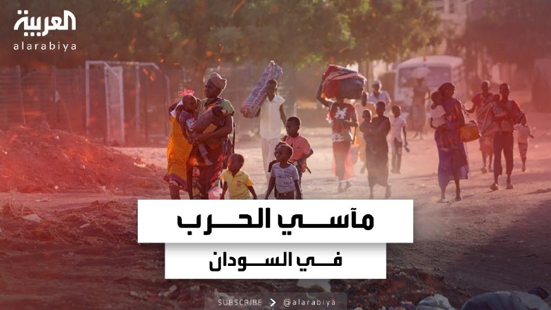

Почему в России дорожает сливочное масло?
 بسبب توقف المراكز عن العمل .. تزايد حالات الإدمان والاضطراب النفسي في الخرطوم وولايات أخرى
بسبب توقف المراكز عن العمل .. تزايد حالات الإدمان والاضطراب النفسي في الخرطوم وولايات أخرىشاهد
 https://www.youtube.com/watch?v=4JMeoUtIzds
https://www.youtube.com/watch?v=4JMeoUtIzds لآخر التطورات تابعونا على رابط البث المباشر
لآخر التطورات تابعونا على رابط البث المباشر
https://ara.tv/jckve
由于中心的暂停…喀土穆和其他州成瘾和心理障碍的病例增加 手表 最新动态，关注我们直播链接

YouTube
بسبب توقف المراكز عن العمل .. تزايد حالات الإدمان والاضطراب النفسي في الخرطوم وولايات أخرى
بسبب توقف المراكز عن العمل .. تزايد حالات الإدمان والاضطراب النفسي في الخرطوم وولايات أخرى
#قناة_العربية
• * *
قناة العربية تقدم لكم آخر الأخبار على مدار الساعة إضافة إ...
由于中心的暂停…喀土穆和其他州成瘾和心理障碍的病例增加 由于中心的暂停…喀土穆和其他州成瘾和心理障碍的病例增加 #阿拉伯语_频道 ** Al Arabiya频道全天候为您提供最新消息添加E…


 الإعلان عن مقتل ضابط كان يشغل منصب قائد فصيل في كتيبة "شاكيد" في "لواء جفعاتي" متأثراً بإصابته قبل أكثر من شهر في معركة جنوب قطاع غزة
الإعلان عن مقتل ضابط كان يشغل منصب قائد فصيل في كتيبة "شاكيد" في "لواء جفعاتي" متأثراً بإصابته قبل أكثر من شهر في معركة جنوب قطاع غزة 


 Грозит ли россиянам наказание за прослушивание песен исполнителей-иноагентов?
Грозит ли россиянам наказание за прослушивание песен исполнителей-иноагентов? В Валенсии число жертв наводнений выросло до 202, сообщила в X региональная служба экстренной помощи.
В Валенсии число жертв наводнений выросло до 202, сообщила в X региональная служба экстренной помощи. Власти Турции планируют принять закон об иностранных агентах — Bloomberg
Власти Турции планируют принять закон об иностранных агентах — Bloomberg